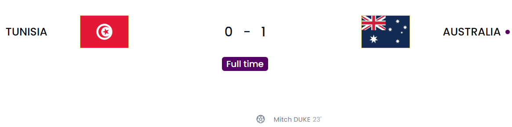

Day 7
Tunisia v Australia

What a win for Australia. This is their first win since 2010. 12 years in the making and they deserved it. They managed to have the attacking threat and they found the breakthrough via Duke who managed to head in perfectly off a deflected cross from Goodwin. Apart from that one moment in the first half, the whole half was good defending from Australia after managing to block a golden chance from Tunisia. Australia also had some chances here and there but just weren’t clinical. You could say the same about Tunisia. There seems to be a general amount of long shots being very very wild. I am starting to doubt the ball. We all know the legend of the Jabulani which was the ball in 2010 and was notorious for its unpredictability. Forlan was the one who managed to tame it well when he trained relentlessly with it. I am not sure if we have that same situation with the fact that the ball has that offside ball-tracking tech inside it. With the goalless draws and the wild long shots, I have been wondering a few things about the actual ball.
Tunisia
Australia
Poland v Saudi Arabia
First goal for Lewa. The Wojciech Wall. Unlucky Saudi. This game could have gone either way if I am being honest because Saudi did look menacing on the attack against Poland but the combination of experience and youth in Glik and Kiwior respectively held firm through it all. Poland took the lead through Zielinski after a goalmouth scramble. Saudi were looking threatening really and had a chance to get back into the game when a penalty was given after a VAR check when Bielik brought down the Saudi attacker. Seemed a bit soft because he managed to use the slightest contact but hey whatever works for them. However, Szczesny did a madness: saving the first penalty and the follow-up as well to keep them in it. Later on, in the second half, Milik hit the post and Lewandowski finally managed to get his first goal in the WC after a mistake from a Saudi midfielder Al-Malki allowed him to get through and slot it easily. All I’ll say for that is: You never do that when you have a goal poacher like Lewandowski. After that goal, it was just setting up shop in defense and just holding on for the points.
Poland
Saudi Arabia
France v Denmark
First nation through. Mesmerizing Mbappe. Dreadful Denmark With this win, France is now the first nation confirmed in the Round of 16. It was a masterful performance but also it also helped with the misses Denmark chalked up. France took their chances, Denmark couldn’t and sometimes that is the difference. Mbappe scored after linking up brilliantly with Theo Hernandez. Denmark did manage to get back into it from a corner when Christensen managed to score past Lloris. But Mbappe made sure the 3 points came when he managed to bundle a cross in from Griezmann(He is doing very well for France at CAM honestly). Apart from that, it was not good enough for Denmark in terms of their finishing. This also means the end of the World Cup curse where the defending champions always went out in the group stage of the next tournament.
France
Denmark

Argentina v Mexico
One final is a success. Never doubt Messi. Star in the making - Enzo Fernandez
This game was weird from the very beginning. Mexico adopted a 5 back system to neutralize Argentina. It was working all the way in the first half. Looking at Mexico, they played both Vega and Lozano as forwards. Argentina went for Lisandro, Mac Allister(Suprise), G. Rodriguez and all which was different but I don’t know why Enzo Fernandez and Alvarez were starting at CM and LW respectively. Argentina and Mexico were really liking going to the ground easily which made the referee’s job really hard due to the amount of playacting. The second half was when the fun began so to speak. First Messi was somehow afforded a little extra space and he managed to score outside the box past Ochoa who is well known for being a GOAT keeper at only the World Cup. A massive achievement. The second came from a corner when the ball was passed to Enzo Fernandez(Fresh sub) and he managed to dribble past 2 defenders and managed to curl an absolute beauty past Ochoa. He becomes the youngest player to score for Argentina since…..yep Messi. Messi with that first goal has now matched Maradona in terms of goals(8) and matches(21). By that time Mexico actually switched to a 4-back system and Argentina to a 5-back system. However, after that Fernandez special, it felt pointless even though Mexico were pretty dangerous as well but just couldn’t get the ball into the final third. Martinez(CB) was brilliant at the back as he has been for Manchester United.